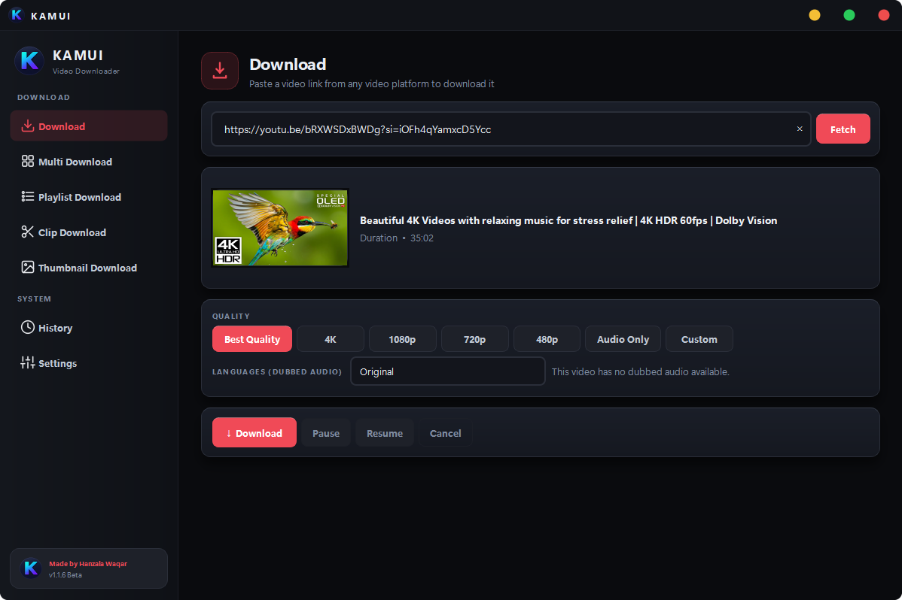
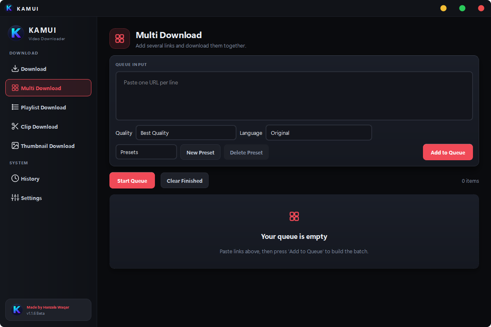
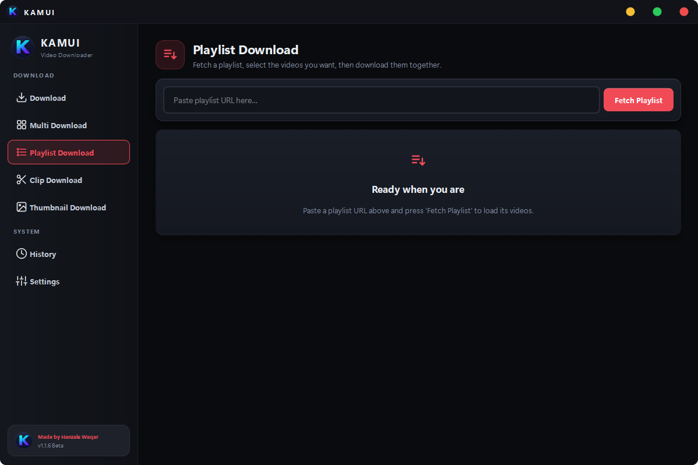
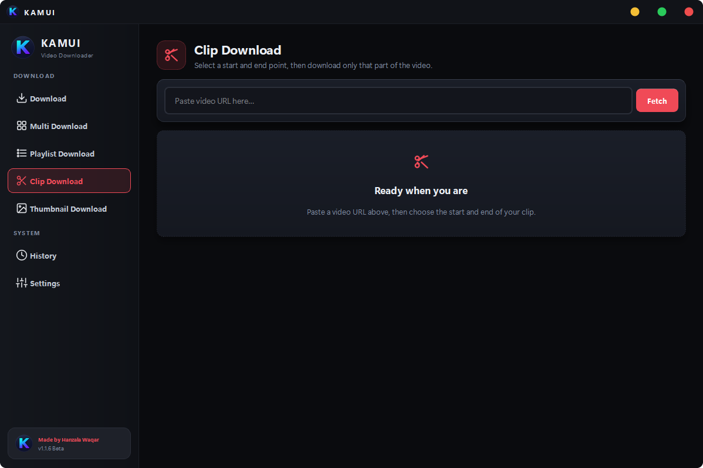
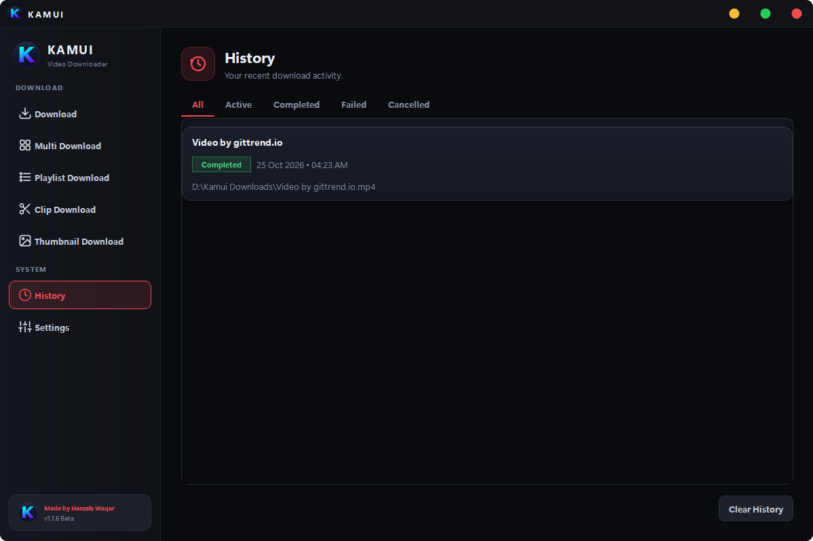

Single Download
Paste a link, review the available formats and language, then choose a quality before you commit.
Best4K1080p720p480pAudio OnlyCustom
KAMUI is a Windows app for downloading videos your way: one link, a whole playlist, just a short clip, or only the thumbnail. Pick the quality and let it run. Powered by yt-dlp and FFmpeg.
Every kind of download gets its own tab in the sidebar, so you are not stuck with one crowded input box.
Paste a link, review the available formats and language, then choose a quality before you commit.
Add a list of links. Kamui queues them and shows progress for each item.
Download a whole playlist at once, numbered and in order, with your chosen quality applied to every item.
Cut only the section you need and export it as ProRes 422, 422 HQ or 422 LT in MP4, MKV or MOV, ready for your editing software. Processing is handled by the bundled FFmpeg.
Save a video's original thumbnail in the best resolution available.
Every job is logged, whether it is completed, running or retrying, so you can check what was downloaded and where.
Pick your accent colour in the app and get a sound when a download finishes. This site works the same way, so try the colour dots at the top.
Run the installer, or unzip the portable build. FFmpeg is bundled, so there is no extra setup.
Add a video, audio, playlist or clip URL. Kamui reads the available formats before you download.
Choose a resolution or Audio Only and start the job. You get a sound when it finishes.
Click a screenshot to open it full-size, then zoom in for detail.





The Chrome / Edge extension works together with the desktop app while it is running.
Go to chrome://extensions (or edge://extensions) and turn on Developer mode.
Click Load unpacked and select the Extension folder that comes with the app.
The extension talks to the running app through a local port on your own computer.
KAMUI is a simple desktop app sitting on top of tools that editors and developers already rely on.
The media extraction engine that does the actual downloading.
Bundled with the app for merging, trimming, remuxing and ProRes export.
A native Windows desktop interface, not a browser wrapper.
Apple ProRes 422 / HQ / LT output for editing workflows.
Beta v1.1.7 Same app, two ways to run it. The browser extension is included in both packages.
KAMUI-Setup-v1.1.7.exe
Standard Windows installation. Offers to open the extension folder when it finishes.
Download installerKAMUI-Portable-v1.1.7.zip
Extract and run KAMUI.exe, no installation needed. Keep the folder together: it contains FFmpeg and the extension files.
Download portablekamui-extension.zip
Already bundled with the app. This is a separate copy for reinstalling only the browser part.
Download extensionA desktop application for Windows that downloads media in single, multi, playlist, thumbnail and clip modes. It uses the yt-dlp engine, with bundled FFmpeg for merging and processing.
Yes. Kamui is distributed free for personal use. There are no ads and no accounts.
Kamui relies on yt-dlp, so it works with the sites yt-dlp supports. Support can change when a site changes how it delivers media. Only download content you are allowed to download.
Yes. Playlist mode fetches every item in the list, numbers them and applies your chosen quality to all of them.
Clip mode trims a section of a video and exports it as MP4, MKV or MOV, including Apple ProRes 422, 422 HQ and 422 LT for use in video editors.
For everyday use, the installer. If you prefer no installation, or want to run it from a USB drive, use the portable ZIP. Both contain the same app.
The extension talks to the running desktop app through a local port (127.0.0.1) on your own computer. If the app is closed, the extension simply has nothing to talk to.
Kamui has no account system, no analytics and no bundled adware. Downloads happen on your computer.